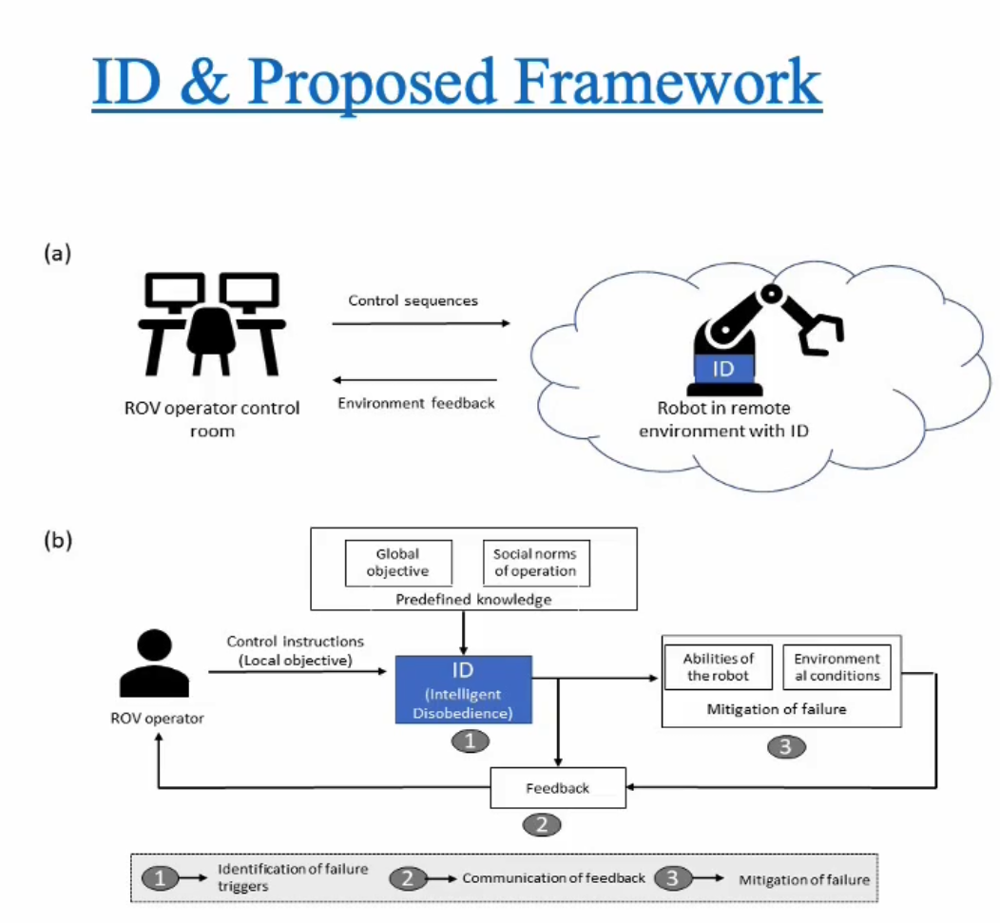
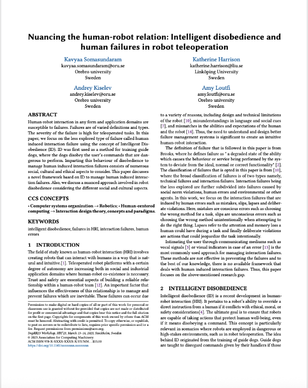
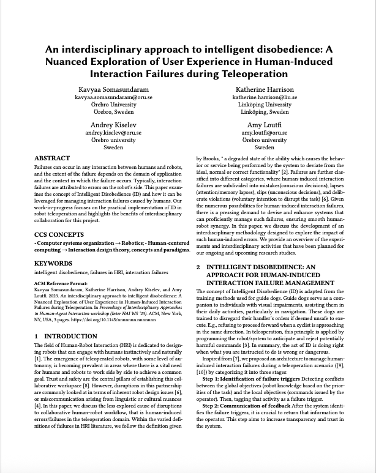

Publications
|
An Empirical Investigation of Intelligent Disobedience for Mitigating Human Error in Collaborative Teleoperation
, Fjollë Novakazi, Amy Loutfi ACM Transactions on Human–Robot Interaction (THRI), Accepted – 9th Jan 2026 Evaluating two Intelligent Disobedience strategies for mitigating human-induced errors in collaborative teleoperation using Wizard-of-Oz user studies. Performance and intervention acceptance were analysed using quantitative and qualitative methods. |
|
Dual-Pass Multimodal Framework for detecting human errors in teleoperation.
, Fjollë Novakazi, Amy Loutfi Journal 2026 — Under Review Developed and evaluvated a dual pass multimodal framework integrating multimodal large language model (MLLM) to detect and reason on the different types of human induced errors. An user study was conducted to benchmark the performance of the framework together with the ablation methods. |
|
Investigating the Effect of Intelligent Disobedience on Perceived Workload and Trust in Collaborative Teleoperation
Fjollë Novakazi, , Amy Loutfi ACM Transactions on Human–Robot Interaction (THRI), 2025 — Under Review Examines how different Intelligent Disobedience intervention strategies shape operator trust, workload, and perceived autonomy. Triangulates questionaire data together with qualitative data insights.
|

|
The Imperfectly Relatable Robot: An Interdisciplinary Approach to Failures in Human–Robot Relations
Katherine Harrison, , Amy Loutfi Book Chapter In: How That Robot Made Me Feel, MIT Press, 2025 This book chapter explores the taxonomy of failures and its forms in HRI together with the different detection and mitigation methods forming interdisiplinary prespective on the topic. |
|
 |
Intelligent Disobedience: A Novel Approach for Preventing Human-Induced Interaction Failures in Robot Teleoperation
, Andrey Kiselev, Amy Loutfi LBR at International conference on Human-Robot Interaction (HRI'23), Stockholm - 2023 Introduces Intelligent Disobedience as a design principle for managing human-induced errors in robot teleoperation. Proposes a framework called HEM-ID inspired by guide-dog training and cognitive error theory to enable proactive error detection and mitigation. |
|
 |
Nuancing the Human–Robot Relation: Intelligent Disobedience and Human Failures in Teleoperation
, Katherine Harrison, Amy Loutfi ImpRR ’23 Workshop in companion with the International conference on Human-Robot Interaction - 2023 Discusses how human failures and robot interventions reshape the relational structure between operator and system, arguing for a more nuanced understanding of obedience, authority, and shared control. The paper also discusses the ethical concerns in relation to using Intelligent Disobedicence as a mitigation strategy for failures in HRI |
|
 |
An Interdisciplinary Approach to Intelligent Disobedience: A Nuanced Exploration of User Experience in Human-induced interaction failures during teleoperation.
, Katherine Harrison, Andrey Kiselev, Amy Loutfi Inter-HAI Workshop in companion with International conference on Human-Agent Interaction, Gothenburg - 2023 Explores how interdisciplinary work could strengthen and add value to the work on understanding the ethical and experiential dimensions of Intelligent Disobedience, examining how disobedient behavior affects user perception, autonomy, and acceptance in human–robot collaboration. |